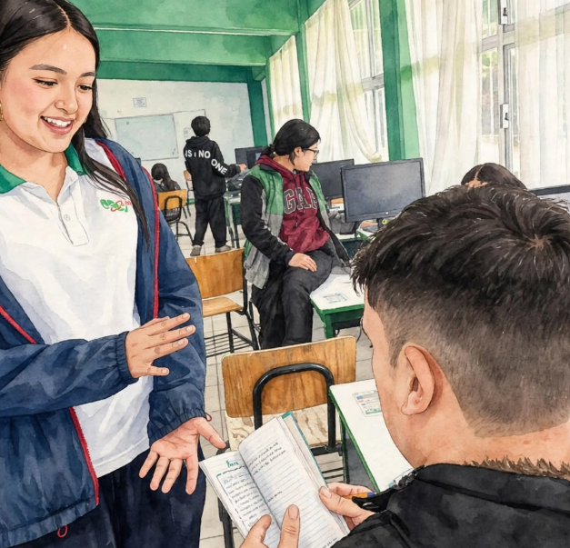

Actualización
Evaluar mis avances y reconocer que el bienestar requiere atención constante.

¿Cómo puedo actualizar mis hábitos físicos?
- Revisar si mis horarios de descanso son adecuados.
- Prestar atención a mi alimentación e hidratación.
- Mantener actividades físicas que disfrute.
- Continuar con mis hábitos de higiene y autocuidado.
- Identificar qué hábitos necesito modificar.
¿Cómo puedo actualizar mi bienestar emocional?
- Reconocer mis emociones en diferentes situaciones.
- Expresar mis sentimientos de manera respetuosa.
- Practicar estrategias saludables para manejar el estrés.
- Dedicar tiempo a actividades que me ayuden a sentir tranquilidad.
- Buscar apoyo cuando lo necesite.
Bienestar personal y colectivo
El cuidado personal también puede beneficiar a quienes me rodean. Cuando descanso, atiendo mis emociones y aprendo a comunicarme, puedo participar de manera más positiva en mi familia, escuela y comunidad. El respeto y el apoyo de otras personas también fortalecen mi bienestar.
Mi revisión de avances
Marca los hábitos que ya estás practicando.
Mensaje final
Mi cuerpo merece cuidado y mis emociones merecen ser escuchadas.
El bienestar físico y emocional son fundamentales para mi vida. Aprender a cuidar mi cuerpo, reconocer lo que siento y buscar alternativas saludables me permite construir mejores hábitos y afrontar los retos cotidianos.
Comprendí que mejorar no significa hacerlo todo perfectamente, sino avanzar poco a poco, reconocer mis necesidades y mantener el compromiso conmigo mismo.
CÓDIGO HUMANO · PROGRAMANDO RUTAS DE PAZConclusión del proyecto
A través de las ocho etapas se reconoce que el bienestar físico y emocional necesitan atención constante. Identificar dificultades, proponer soluciones y desarrollar hábitos saludables permite tomar decisiones responsables. Además, el respeto, la empatía y la convivencia contribuyen a fortalecer el bienestar individual y colectivo.
Fuentes de información
Las siguientes instituciones ofrecen información sobre salud, bienestar físico y emocional.